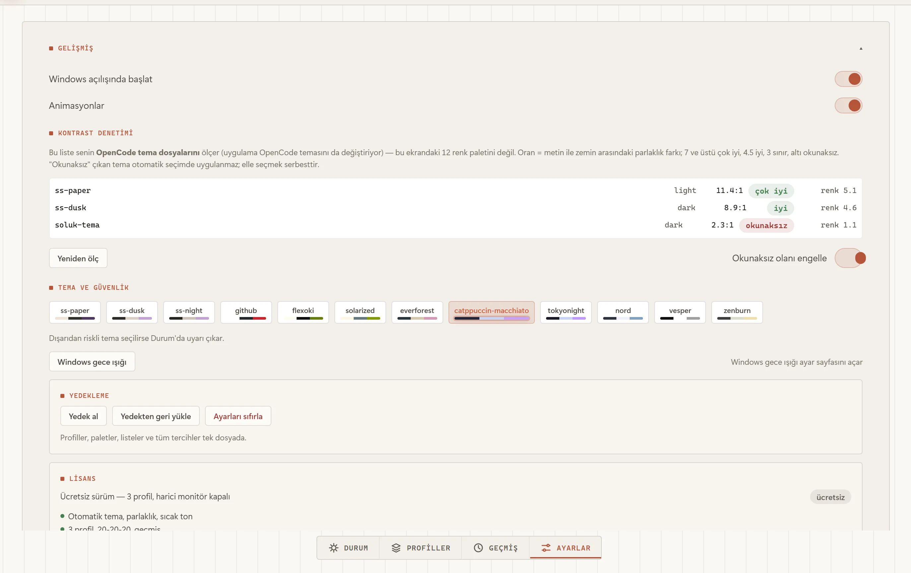
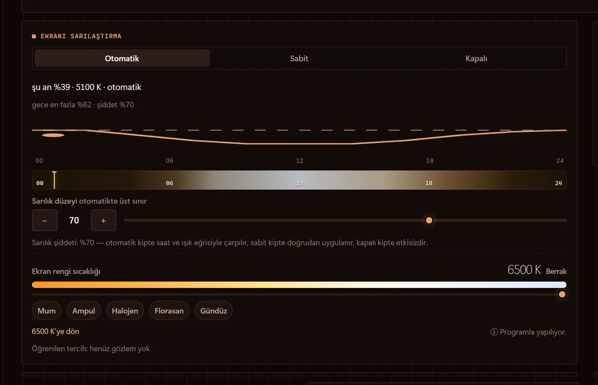
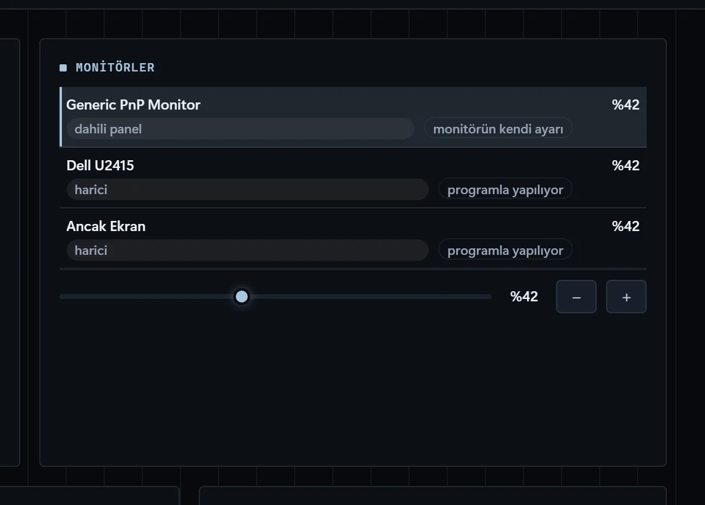

Windows · tray app
Your screen measures the light in the room.
The camera reads a few frames and extracts average brightness and tone. Brightness, warmth and the OpenCode theme follow that reading. Games, video, PDFs and the lock screen are left untouched.
Computed with default settings: strength cap 70%, night peak 62%.
- Camera frames are never written to disk
- No account
- No telemetry
- GPL-3.0
Dawn
The screen wakes as the curtain opens.
In low light the brightness stays low. As light rises it climbs at most 8 points per tick, so the screen never jumps.
- The brightness target shifts with the light reading: 6 points down in the dark, 4 points up in bright light.
- Warmth rises in the dark too; at dawn the curve sits at 39% strength.
- A tick runs every minute, and the camera opens at most every 5 minutes.

Noon
Daylight at its clearest.
At noon the curve drops to zero: warmth is off and colors stay at 6500 K. Brightness approaches the daytime ceiling.
- In automatic selection, a theme that measures FAIL is not applied; picking it by hand is allowed.
- Contrast is computed with WCAG 2.1: above 7 is excellent, 4.5 is good, 3 is the limit.
- The gate can be switched off in Settings; it is on by default.

Evening
The tone starts to warm.
The evening curve climbs: 27% strength at 18:00 and 55% at 21:00. Colors shift warm without dimming the screen.
- The strength cap is 70%; at night at most 62% is applied.
- Kelvin falls from 6500 to 3000 in steps of 100.
- Turning warmth off restores the learned color balance.

Night
The night ceiling takes over.
At 23:00 the curve reaches 88% and the cap applies 62%. The screen stays dark but readable.
- After 10 idle minutes the target drops 15 points, after 30 it drops 25; the return is a ramp of about 3.5 seconds.
- The 20-20-20 reminder fires once: it closes on "Looked" or "Snooze" and does not repeat on its own.
- External monitor brightness is read and written per display over DDC/CI.

What it leaves alone
The rules always win; not even a bound profile can override them.
Touches
- With no pause and the screen on, it adjusts brightness.
- With warmth off, it does not touch color balance.
- If one monitor refuses DDC/CI, that monitor is skipped and the others are driven.
Leaves alone
- A game in the foreground freezes the tick.
- A video player in the foreground freezes the tick.
- A fullscreen app on the keep-list continues; any other fullscreen app stops it.
- A PDF reader in the foreground freezes the tick.
- While the screen is locked, nothing is written.
Seven things it does
All in one tick, once a minute. No extra service, no extra process.
-
Ambient light from the camera
Each frame yields only average brightness and tone; nothing is written to disk. If the camera is busy it falls back to the clock.
-
Day curve and night ceiling
Strength is computed from 11 anchor points; the peak is 88% at 23:00 and the cap applies 62%.
-
Warmth
From 6500 K down to 3000 K in steps of 100 K. It shifts colors without dimming the screen.
-
Contrast gate
Theme files are measured with WCAG 2.1; a theme that measures FAIL is not applied automatically.
-
Profiles
Three in the free build, six with Pro. A profile can be bound to an executable name; when that app comes forward, settings follow the profile.
-
External monitors
The internal panel is read over WMI, external displays over DDC/CI. Writing is unlocked by a Pro license.
-
20-20-20 and idle return
A reminder every 20 minutes that does not repeat until acknowledged. Idle dims the screen; the return takes about 3.5 seconds.
Install facts
- Installer
- NSIS setup, x64, per-user scope. No admin prompt.
- Signature
- No Authenticode signature. SmartScreen may warn about an unknown publisher; use "More info → Run anyway".
- Integrity
- Every release ships a .sha256 file: verify with Get-FileHash.
- Updates
- In-app; the package is signed with minisign and verified on download.
- Privacy
- Camera frames are not written and not uploaded. No telemetry and no account.
- License
- The free build is fully working. Pro unlocks with an offline Ed25519 key.
Free and Pro
The free build is a complete app, not a trial. Pro raises the profile count and opens external displays.
Free
- Brightness from light and time
- Automatic warmth and night ceiling
- OpenCode theme and Windows system theme
- Three profiles
- Contrast gate
- 20-20-20 reminder
Pro
- Six profiles
- External monitor brightness over DDC/CI
- Warmth on external monitors
- Apps bound to profiles and per-app themes
Pro pricing is not set yet. The "Get Pro" button currently opens the project page.
Frequently asked
What does the camera see, and where does it go?
Each measurement reads a few frames and extracts only average brightness and tone. Nothing is written to disk or sent over the network. No frames are stored.
How much battery does it use?
A tick runs every minute, but the camera opens at most every 5 minutes. The interval grows as the battery drops: below 30% it is 5 minutes, below 20% ten, below 10% twenty, and below that thirty.
Why does brightness not work with HDR on?
Some monitors refuse DDC/CI brightness while HDR is on. The app says so in the error message; turning HDR off usually fixes it.
My external monitor is listed but does not change?
DDC/CI may be disabled in the monitor OSD, or the cable may not carry it. In the free build writing is locked; reading and listing still work.
Does it change the screen while I play?
No. Games, video and PDFs in the foreground freeze the tick. A fullscreen app that is not on the keep-list also stops it.
How do I uninstall, and does it revert?
Uninstall it from Windows settings. Color balance is restored first; turning warmth off also brings the calibration back.
Is the app in English?
The app interface is currently Turkish only. This site is bilingual.
Install it, forget it.
The first tick runs at launch. After that it measures, decides and applies once a minute.